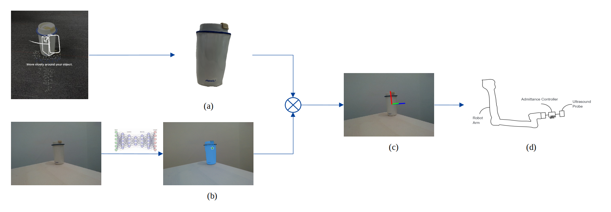

Chenxin Ma (马晨欣)
Hi there, welcome to my homepage!
My name is Chenxin Ma, a third year master student from ShanghaiTech University, advised by Dr. Haikun Qi . I was a resarch intern in United Imaging, conducted project about Ultrasound Robotics. Now I am a robotics resarch intern in BIGAI.
My research interests lie in medical robotics, 3D computer vision, and human robot interaction, with particular interests in generalizable human perception, helping robot interact safely with adaptive contorl. My research objective is to help robot to understand the real world better and develop robotics solution that prioritze both patient and operator well-being.
Project
Ultrasound Robotics

A Teleoperative Ultrasound Robot System with Low-Cost Method for Real-World Image Acquisition
Chenxin Ma
[Webpage]
Experience

Beijing Institute for General Artificial Intelligence (BIGAI)
2024.11 - Present
Research Intern
United Imaging
2023.07 - 2024.10
Research Intern
ShanghaiTech University
2022.09 - Present
Master of Electrical Engineering